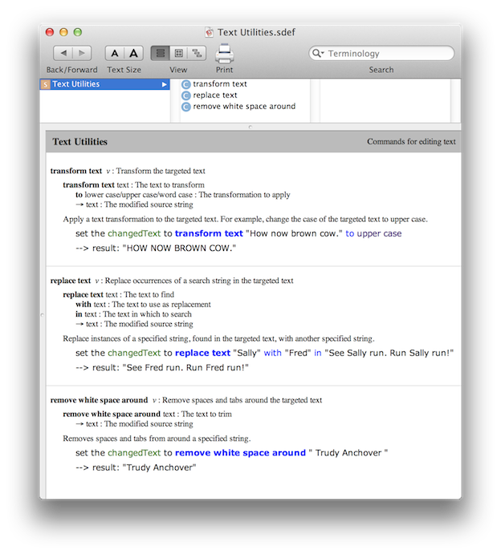

Why Use Terminology?
The introduction of AppleScript Libraries, will substantially expand the number of commands and routines available to users, as scripters and developers create and distribute these new tools.
While a boon for customers, in terms of delivering increased functionality, having to remember script library routine names and paramaters when writing scripts, is challenging problem, even for those used to dealing with complex code.
To make it easier for the users of script libraries to recall and execute commands and their parameters, script libraries can contain and publish scripting dictionaries that use common-language terms and phrasing to represent the complex handlers code executed by the library.
For example, when composing a script that references a script library command, it’s much easier to remember and implement:
transform text sourceText to upper case
than:
changeCaseOfText(sourceText, numericCaseIndicator)
or:
changeCaseOfText:sourceText toCaseIndicatedBy:numericCaseIndicator
Also, from an esthetic point-of-view, using terminology is more “AppleScript-like” than including handler names and parameters in your script statements.
If you want others to use the AppleScript libraries you create, consider adding scripting terminology to your AppleScript libraries.
The terminology of an AppleScript Library can be viewed in the same manner as viewing the dictionary of scriptable applications.
From within the AppleScript Editor application, choose Open Dictionary… from the File menu. In the forthcoming file dialog, locate and select the script library whose terminology you wish to view. The script library’s scripting terminology will be displayed in a standard dictionary viewer window, as shown below:

The dictionary viewer for an AppleScript Library" displaywidth="1432" displayheight="1586" onclick="void(0);lightboxThisImage(this);">The best way to learn how to create and implement terminology for a script library is to watch the following 26-minute video. It explains, in detail, the step-by-step process of creating and adding a scripting dictionary to an AppleScript library.
VIDEO: Libraries with Terminology (26:12-1152×720)
Additional technical documentation is available on the Apple Developer website, linked below:
RESOURCE: Detailed developer documentation about creating scripting dictionaries, is available on the Apple developer site. See: Preparing a Scripting Definition File
Also, you may want to download the fully-editable example AppleScript Libraries provided in the next section of this topic.